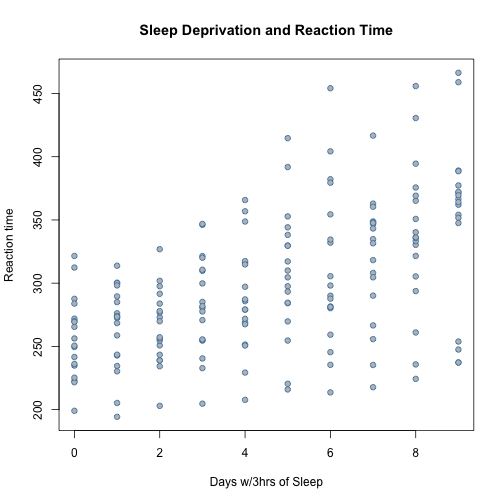
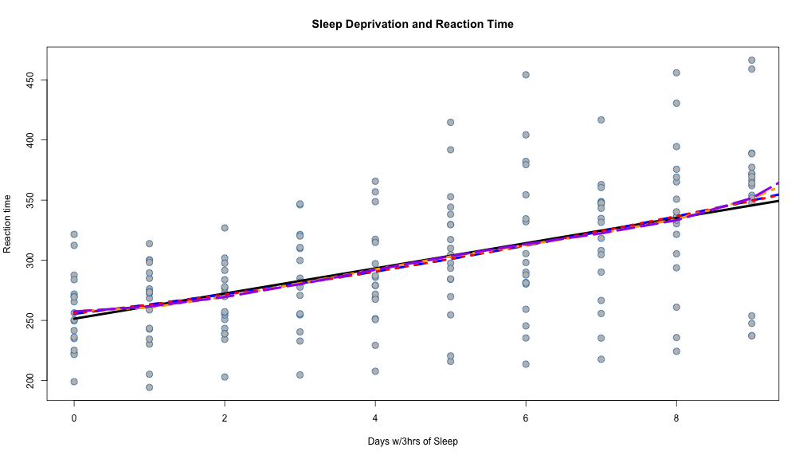
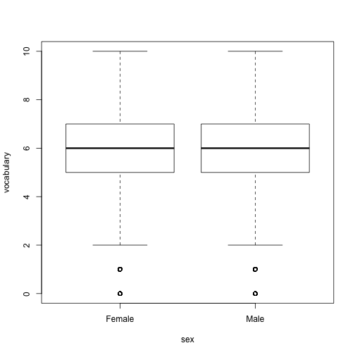
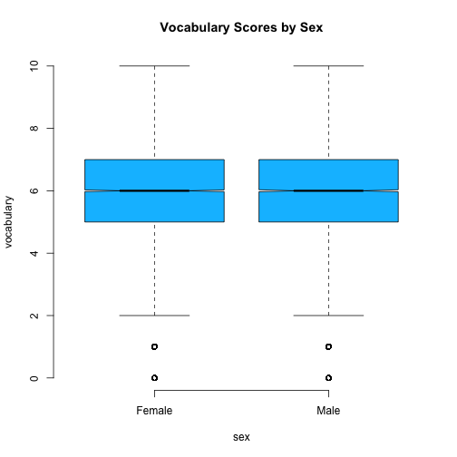
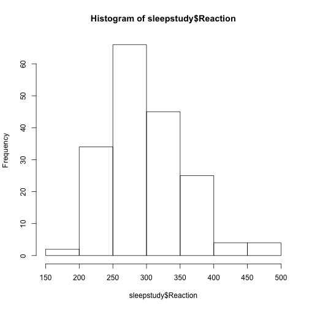
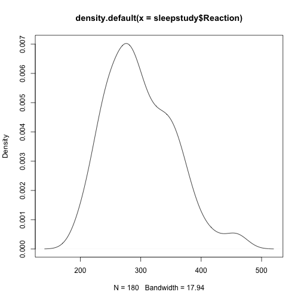
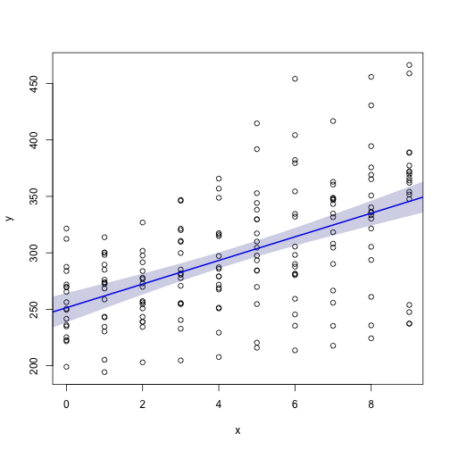
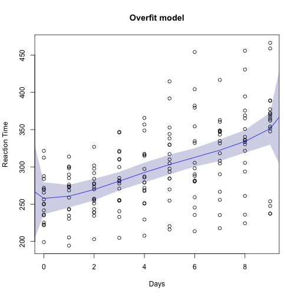
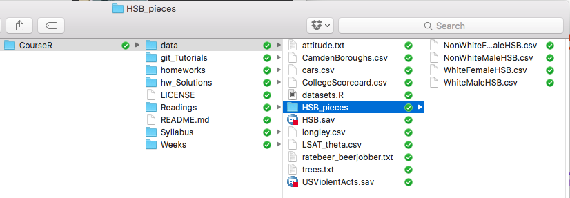
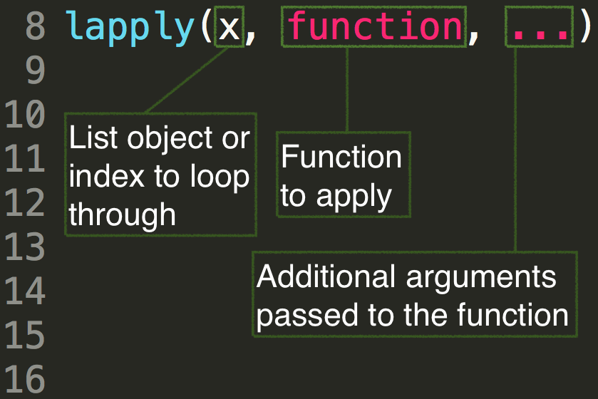

Today's Agenda
- Review everything we've covered to date
- Finish up from last session (group-level summaries)
- We may still have a hard time getting here.
Schedule the rest of spring term dates
Daniel Anderson
CourseR
Schedule the rest of spring term dates
for() loopsapply(), lapply(), and sapply()Fluent object-oriented programming begins with understanding object assignment
a <- 5
b <- c(2, 4, 7)
c <- matrix(1:12, ncol = 4)
a + b
## [1] 7 9 12
b * c # element-wise multiplication
## [,1] [,2] [,3] [,4]
## [1,] 2 8 14 20
## [2,] 8 20 32 44
## [3,] 21 42 63 84
d <- read.csv("./data/CamdenBoroughs.csv")
mod <- lm(School.Capacity ~ Town, data = d)
summary(mod)
##
## Call:
## lm(formula = School.Capacity ~ Town, data = d)
##
## Residuals:
## Min 1Q Median 3Q Max
## -673.29 -198.94 -126.76 26.99 1643.24
##
## Coefficients:
## Estimate Std. Error t value Pr(>|t|)
## (Intercept) 525.00 256.80 2.044 0.0414 *
## TownBarnet -92.68 269.97 -0.343 0.7315
## TownCamden 625.00 444.79 1.405 0.1605
## TownEdgware -89.50 274.53 -0.326 0.7445
## TownFinchley -315.00 444.79 -0.708 0.4791
## TownHarrow 418.29 291.18 1.437 0.1514
## TownLondon -118.24 257.29 -0.460 0.6460
## TownNew Barnet 785.00 444.79 1.765 0.0781 .
## TownWembley 236.42 269.97 0.876 0.3816
## TownWest Hendon -285.00 444.79 -0.641 0.5219
## ---
## Signif. codes: 0 '***' 0.001 '**' 0.01 '*' 0.05 '.' 0.1 ' ' 1
##
## Residual standard error: 363.2 on 574 degrees of freedom
## (80 observations deleted due to missingness)
## Multiple R-squared: 0.06895, Adjusted R-squared: 0.05436
## F-statistic: 4.723 on 9 and 574 DF, p-value: 4.488e-06
FALSE or TRUE
library(car)
data(Vocab)
head(Vocab)
## year sex education vocabulary
## 20040001 2004 Female 9 3
## 20040002 2004 Female 14 6
## 20040003 2004 Male 14 9
## 20040005 2004 Female 17 8
## 20040008 2004 Male 14 1
## 20040010 2004 Male 14 7
Calculate proportion of vocabulary scores between 3 and 6
voc36 <- with(Vocab, vocabulary > 2 & vocabulary < 7)
str(voc36)
## logi [1:21638] TRUE TRUE FALSE FALSE FALSE FALSE ...
table(voc36) / nrow(Vocab)
## voc36
## FALSE TRUE
## 0.456789 0.543211
Note that logical vectors coerce to 0/1 (numeric) and "TRUE"/"FALSE" (character)
int <- as.integer(c(2.56, 3.01, 3.99, 7, 2, 4))
dbl <- as.double(c(2.56, 3.01, 3.99, 7, 2, 4))
int
## [1] 2 3 3 7 2 4
dbl
## [1] 2.56 3.01 3.99 7.00 2.00 4.00
as.character(c(TRUE, 3.12, 6L, "some string"))
## [1] "TRUE" "3.12" "6" "some string"
c(TRUE, 3.12, 6L)
## [1] 1.00 3.12 6.00
Atomic vectors with a dimension attribute
v <- rnorm(24, 10, 2)
str(v)
## num [1:24] 12.13 10.36 12.39 9.11 6.1 ...
class(v)
## [1] "numeric"
typeof(v)
## [1] "double"
dim(v) <- c(6, 4)
class(v)
## [1] "matrix"
v
## [,1] [,2] [,3] [,4]
## [1,] 12.132826 11.233295 11.213612 9.262523
## [2,] 10.358233 14.546150 11.818408 12.370503
## [3,] 12.385152 12.943263 9.130103 8.106915
## [4,] 9.109423 12.534498 9.357624 10.835920
## [5,] 6.097544 12.937768 13.830390 11.202088
## [6,] 9.227691 9.846199 10.102455 10.386675
m1 <- matrix(c(1, 2.5, 3,
5, 12, 8,
14, 1, 9
),
nrow = 3,
ncol = 3,
byrow = TRUE)
m1
## [,1] [,2] [,3]
## [1,] 1 2.5 3
## [2,] 5 12.0 8
## [3,] 14 1.0 9
Be careful about the byrow argument
m2 <- matrix(c(1, 2.5, 3,
5, 12, 8,
14, 1, 9
),
nrow = 3,
ncol = 3)
m2
## [,1] [,2] [,3]
## [1,] 1.0 5 14
## [2,] 2.5 12 1
## [3,] 3.0 8 9
n dimensional matrices (essentially)
dim(v) <- c(2, 2, 2, 3)
v
## , , 1, 1
##
## [,1] [,2]
## [1,] 12.13283 12.385152
## [2,] 10.35823 9.109423
##
## , , 2, 1
##
## [,1] [,2]
## [1,] 6.097544 11.23330
## [2,] 9.227691 14.54615
##
## , , 1, 2
##
## [,1] [,2]
## [1,] 12.94326 12.937768
## [2,] 12.53450 9.846199
##
## , , 2, 2
##
## [,1] [,2]
## [1,] 11.21361 9.130103
## [2,] 11.81841 9.357624
##
## , , 1, 3
##
## [,1] [,2]
## [1,] 13.83039 9.262523
## [2,] 10.10246 12.370503
##
## , , 2, 3
##
## [,1] [,2]
## [1,] 8.106915 11.20209
## [2,] 10.835920 10.38668
rownames(m1) <- c("r1", "r2", "r3")
colnames(m1) <- c("c1", "c2", "c3")
m1
## c1 c2 c3
## r1 1 2.5 3
## r2 5 12.0 8
## r3 14 1.0 9
names(m1) <- letters[1:9]
m1
## c1 c2 c3
## r1 1 2.5 3
## r2 5 12.0 8
## r3 14 1.0 9
## attr(,"names")
## [1] "a" "b" "c" "d" "e" "f" "g" "h" "i"
Indexing with the bracket function, [:
# Third element of int
int[3]
## [1] 3
# Third through fifth
int[3:5]
## [1] 3 7 2
# First, third, and fifth
int[c(1, 3, 5)]
## [1] 2 3 2
(i.e., matrices and arrays)
# First row, third column
m1[1, 3]
## [1] 3
# Entire second row
m1[2, ]
## c1 c2 c3
## 5 12 8
# Extract first row, second column, from all matrices in array
v[1, 2, , ]
## [,1] [,2] [,3]
## [1,] 12.38515 12.937768 9.262523
## [2,] 11.23330 9.130103 11.202088
m1[ ,"c1"]
## r1 r2 r3
## 1 5 14
m1["d"]
## d
## 2.5
Lists: can contain any type of data, including other lists Data Frames: Lists of equal-length vectors
l <- list(
c("a", "b", "c"),
list(1:5),
rep(c(T,F), 7),
rnorm(3, 100, 25)
)
str(l)
## List of 4
## $ : chr [1:3] "a" "b" "c"
## $ :List of 1
## ..$ : int [1:5] 1 2 3 4 5
## $ : logi [1:14] TRUE FALSE TRUE FALSE TRUE FALSE ...
## $ : num [1:3] 117.9 91.6 128.3
$ with the element
names, or through indexing with a double bracket [[]].[], the element will be returned, but
of type list.typeof(l)
## [1] "list"
typeof(l[1])
## [1] "list"
typeof(l[[1]])
## [1] "character"
l[1]
## [[1]]
## [1] "a" "b" "c"
l[[1]]
## [1] "a" "b" "c"
l2 <- list(rnorm(5, 100, 10), letters[5:9], c(T, T, F, F, T))
names(l2) <- c("rand", "letters", "log")
str(l2)
## List of 3
## $ rand : num [1:5] 107 94.5 98.2 108.5 95.6
## $ letters: chr [1:5] "e" "f" "g" "h" ...
## $ log : logi [1:5] TRUE TRUE FALSE FALSE TRUE
l2
## $rand
## [1] 106.95510 94.54320 98.20043 108.48319 95.58491
##
## $letters
## [1] "e" "f" "g" "h" "i"
##
## $log
## [1] TRUE TRUE FALSE FALSE TRUE
df <- as.data.frame(l2)
df
## rand letters log
## 1 106.95510 e TRUE
## 2 94.54320 f TRUE
## 3 98.20043 g FALSE
## 4 108.48319 h FALSE
## 5 95.58491 i TRUE
as.list(df)
## $rand
## [1] 106.95510 94.54320 98.20043 108.48319 95.58491
##
## $letters
## [1] e f g h i
## Levels: e f g h i
##
## $log
## [1] TRUE TRUE FALSE FALSE TRUE
colors <- factor(c("black", "green", "blue", "blue", "black"))
attributes(colors)
## $levels
## [1] "black" "blue" "green"
##
## $class
## [1] "factor"
str(colors)
## Factor w/ 3 levels "black","blue",..: 1 3 2 2 1
colors[6] <- "blue"
colors
## [1] black green blue blue black blue
## Levels: black blue green
colors[7] <- "purple"
## Warning in `[<-.factor`(`*tmp*`, 7, value = "purple"): invalid factor
## level, NA generated
colors
## [1] black green blue blue black blue <NA>
## Levels: black blue green
is.atomic(colors)
## [1] TRUE
typeof(colors)
## [1] "integer"
Note: Be careful with is.vector(). It only returns TRUE if the vector has no
attributes outside of names
is.vector(colors)
## [1] FALSE
Examine the relation between education and vocabulary
# Basic plot
library(lme4)
data(sleepstudy)
with(sleepstudy, plot(Days, Reaction))
## Loading required package: Matrix

Provide more meaningful labels, change points
with(sleepstudy,
plot(Days, Reaction,
xlab = "Days w/3hrs of Sleep",
ylab = "Reaction time",
main = "Sleep Deprivation and
Reaction Time",
pch = 21,
bg = "gray",
col = "steelblue")
)

Plotting multiple fits
# Linear model
mod1 <- lm(Reaction ~ Days, data = sleepstudy)
# Quadratic model
mod2 <- lm(Reaction ~ poly(Days, 2), data = sleepstudy)
# Increasingly complex models
mod3 <- lm(Reaction ~ poly(Days, 3), data = sleepstudy)
mod4 <- lm(Reaction ~ poly(Days, 4), data = sleepstudy)
mod5 <- lm(Reaction ~ poly(Days, 5), data = sleepstudy)
lines(x = 0:10, y = predict(mod1, newdata = data.frame(Days = 0:10)),
lwd = 2, lty = 1)
lines(x = 0:10, y = predict(mod2, newdata = data.frame(Days = 0:10)),
col = "blue", lwd = 2, lty = 2)
lines(x = 0:10, y = predict(mod3, newdata = data.frame(Days = 0:10)),
col = "red", lwd = 2, lty = 3)
lines(x = 0:10, y = predict(mod4, newdata = data.frame(Days = 0:10)),
col = "orange", lwd = 2, lty = 4)
lines(x = 0:10, y = predict(mod5, newdata = data.frame(Days = 0:10)),
col = "purple", lwd = 2, lty = 5)

When you plot the relation between a categorical predictor and continuous outcome, the default plot() method is a boxplot.
plot(vocabulary ~ sex, data = Vocab)

(Note: to really extend the boxplot, move to violin or bean plots)
par(bty = "n")
plot(vocabulary ~ sex, data = Vocab,
notch = TRUE,
col = "deepskyblue",
main = "Vocabulary Scores by Sex")

hist(sleepstudy$Reaction)

plot(density(sleepstudy$Reaction))

Anything that carries out an operation in R is a function. For example
3 + 5 + 7
## [1] 15
Could also be written
`+`(3, `+`(5, 7))
## [1] 15
In other words, the + operator is itself a function that takes two arguments (both numeric), which it sums. The + operator is an example of an infix function, which we'll discuss more later today.
a <- lm
data(mtcars)
summary( a(hp ~ drat + wt, data = mtcars) )
##
## Call:
## a(formula = hp ~ drat + wt, data = mtcars)
##
## Residuals:
## Min 1Q Median 3Q Max
## -83.873 -33.910 -12.853 9.585 171.597
##
## Coefficients:
## Estimate Std. Error t value Pr(>|t|)
## (Intercept) -27.782 127.992 -0.217 0.82968
## drat 5.354 25.511 0.210 0.83524
## wt 48.244 13.940 3.461 0.00169 **
## ---
## Signif. codes: 0 '***' 0.001 '**' 0.01 '*' 0.05 '.' 0.1 ' ' 1
##
## Residual standard error: 53.29 on 29 degrees of freedom
## Multiple R-squared: 0.4348, Adjusted R-squared: 0.3958
## F-statistic: 11.15 on 2 and 29 DF, p-value: 0.0002552
body()formals()
Often it's useful to know the location of variables quickly. Let's write a function that provides us with an output of all the variable names in a dataset, and their location, with a clean and convenient output.
varNames <- names(d)
head(varNames)
## [1] "Unique.Reference.Number" "Local.Authority.Code"
## [3] "Local.Authority.Name" "Establishment.Number"
## [5] "Establishment.Name" "Type.Of.Establishment"
length(varNames)
## [1] 81
cbind(1:length(varNames), varNames)
## varNames
## [1,] "1" "Unique.Reference.Number"
## [2,] "2" "Local.Authority.Code"
## [3,] "3" "Local.Authority.Name"
## [4,] "4" "Establishment.Number"
## [5,] "5" "Establishment.Name"
## [6,] "6" "Type.Of.Establishment"
## [7,] "7" "Establishment.Status"
## [8,] "8" "Reason.Establishment.Opened"
## [9,] "9" "Open.Date"
## [10,] "10" "Reason.Establishment.Closed"
## [11,] "11" "Close.Date"
## [12,] "12" "Phase.Of.Education"
## [13,] "13" "Statutory.Low.Age"
## [14,] "14" "Statutory.High.Age"
## [15,] "15" "Boarders"
## [16,] "16" "Official.Sixth.Form"
## [17,] "17" "Gender"
## [18,] "18" "Religious.Character"
## [19,] "19" "Diocese"
## [20,] "20" "Admissions.Policy"
## [21,] "21" "School.Capacity"
## [22,] "22" "Special.Classes"
## [23,] "23" "Census.Date"
## [24,] "24" "Number.Of.Pupils"
## [25,] "25" "Number.Of.Boys"
## [26,] "26" "Number.Of.Girls"
## [27,] "27" "Percentage.Claiming.Free.School.Meals"
## [28,] "28" "Trust.School"
## [29,] "29" "Trust.Name"
## [30,] "30" "School.Sponsored"
## [31,] "31" "School.Sponsor"
## [32,] "32" "Federation"
## [33,] "33" "Federation.Name"
## [34,] "34" "Unique.Property.Reference.Number"
## [35,] "35" "Further.Higher.Education.Identifier"
## [36,] "36" "Further.Education.Type"
## [37,] "37" "Ofsted.Last.Inspected"
## [38,] "38" "Ofsted.Special.Measures"
## [39,] "39" "Last.Changed.Date"
## [40,] "40" "Street"
## [41,] "41" "Locality"
## [42,] "42" "Address.3"
## [43,] "43" "Town"
## [44,] "44" "County"
## [45,] "45" "Postcode"
## [46,] "46" "Website"
## [47,] "47" "Telephone.Number"
## [48,] "48" "Head.Title"
## [49,] "49" "Head.First.Name"
## [50,] "50" "Head.Last.Name"
## [51,] "51" "Head.Honours"
## [52,] "52" "Head.Preferred.Job.Title"
## [53,] "53" "Teen.Mothers"
## [54,] "54" "Teen.Mothers.Places"
## [55,] "55" "Child.Care.Facilities"
## [56,] "56" "Special.Education.Needs.Pupil.Referral.Unit"
## [57,] "57" "Emotional.Behavioural.Difficulties"
## [58,] "58" "Full.Time.Provision"
## [59,] "59" "Education.By.Other"
## [60,] "60" "Section.41.Approved"
## [61,] "61" "Special.Education.Needs.1"
## [62,] "62" "Special.Education.Needs.2"
## [63,] "63" "Region"
## [64,] "64" "Administrative.Ward"
## [65,] "65" "Parliamentary.Constituency"
## [66,] "66" "Urban.Rural"
## [67,] "67" "GSSLA.Code"
## [68,] "68" "Easting"
## [69,] "69" "Northing"
## [70,] "70" "Middle.Super.Output.Area"
## [71,] "71" "Lower.Super.Output.Area"
## [72,] "72" "Boarding.Establishment"
## [73,] "73" "Previous.Local.Authority.Code"
## [74,] "74" "Previous.Local.Authority.Name"
## [75,] "75" "Previous.Establishment.Number"
## [76,] "76" "Longitude"
## [77,] "77" "Latitude"
## [78,] "78" "Spatial.Accuracy"
## [79,] "79" "Last.Uploaded"
## [80,] "80" "Location"
## [81,] "81" "Socrata.ID"
nms <- function(d) {
varNames <- names(d)
return(cbind(1:length(varNames), varNames))
}
nms(sleepstudy)
## varNames
## [1,] "1" "Reaction"
## [2,] "2" "Days"
## [3,] "3" "Subject"
In other words, a generic function, like plot() will change in behavior depending on the specific class of object fed to it (i.e., the methods will change).
Generic function that produces a regression plot w/Standard error.
x, y OR an object of class lm (i.e., the results of a linear model)regPlot <- function(x, y, lcol = "blue",
se = TRUE, secol = c(0, 0, 0.5, 0.2), ...) UseMethod("regPlot")
regPlot.default <- function(x, y, lcol = "blue",
se = TRUE, secol = c(0, 0, 0.5, 0.2), ...) {
mod <- lm(y ~ x)
nd <- data.frame(x = c(min(x, na.rm = TRUE) - sd(x, na.rm = TRUE),
unique(x),
max(x, na.rm = TRUE) + sd(x, na.rm = TRUE)))
pred <- predict(mod,
newdata = nd,
se.fit = TRUE)
plot(x, y, ...)
abline(mod, col = lcol, lwd = 2)
if(se == TRUE) {
polygon(c(nd$x, rev(nd$x)),
c(pred$fit - (1.96 * pred$se.fit),
rev(pred$fit + (1.96 * pred$se.fit))),
col = rgb(secol[1], secol[2], secol[3], secol[4]), border = NA)
}
}
lmregPlot.lm <- function(mod, lcol = "blue",
se = TRUE, secol = c(0, 0, 0.5, 0.2), ...) {
x <- mod$model[[2]]
y <- mod$model[[1]]
nd <- data.frame(x = c(min(x, na.rm = TRUE) - sd(x, na.rm = TRUE),
unique(x),
max(x, na.rm = TRUE) + sd(x, na.rm = TRUE)))
names(nd) <- names(mod$model)[2]
pred <- predict(mod,
newdata = nd,
se.fit = TRUE)
plot(x, y, ...)
lines(nd[[1]], pred$fit, col = lcol)
if(se == TRUE) {
polygon(c(nd[[1]], rev(nd[[1]])),
c(pred$fit - (1.96 * pred$se.fit),
rev(pred$fit + (1.96 * pred$se.fit))),
col = rgb(secol[1], secol[2], secol[3], secol[4]), border = NA)
}
}
regPlot(sleepstudy$Days, sleepstudy$Reaction)

lm methodtest <- lm(Reaction ~ Days +
I(Days^2) + I(Days^3) +
I(Days^4),
data = sleepstudy)
regPlot(test,
xlab = "Days",
ylab = "Reaction Time",
main = "Overfit model")

poly() function can't be used within the lm.We could fix these issues!

a <- letters[1:26]
a
## [1] "a" "b" "c" "d" "e" "f" "g" "h" "i" "j" "k" "l" "m" "n" "o" "p" "q"
## [18] "r" "s" "t" "u" "v" "w" "x" "y" "z"
for(i in 1:5){
print(a[i])
}
## [1] "a"
## [1] "b"
## [1] "c"
## [1] "d"
## [1] "e"
Simulate tossing a coin, record results
b <- rep(NA, 10)
b
## [1] NA NA NA NA NA NA NA NA NA NA
for(i in seq_along(b)) {
b[i] <- sample(c("Heads", "Tails"), 1)
}
b
## [1] "Tails" "Tails" "Tails" "Tails" "Tails" "Tails" "Tails" "Tails"
## [9] "Tails" "Heads"

# List all files in directory
files <- list.files("./data/HSB_pieces/")
files
## [1] "NonWhiteFemaleHSB.csv" "NonWhiteMaleHSB.csv" "WhiteFemaleHSB.csv"
## [4] "WhiteMaleHSB.csv"
# Create empty list
l <- vector("list", length(files))
l
## [[1]]
## NULL
##
## [[2]]
## NULL
##
## [[3]]
## NULL
##
## [[4]]
## NULL
for(i in seq_along(files)) {
l[[i]] <- read.csv(paste0("./data/HSB_pieces/", files[i]))
}
# Name elements of the list according to the file name
names(l) <- substr(files, 1, nchar(files) - 4)
str(l)
## List of 4
## $ NonWhiteFemaleHSB:'data.frame': 1065 obs. of 5 variables:
## ..$ id : int [1:1065] 1224 1288 1296 1296 1296 1296 1296 1296 1296 1296 ...
## ..$ minority: int [1:1065] 1 1 1 1 1 1 1 1 1 1 ...
## ..$ female : int [1:1065] 1 1 1 1 1 1 1 1 1 1 ...
## ..$ ses : num [1:1065] -1.248 -1.468 -0.148 -1.568 -0.288 ...
## ..$ mathach : num [1:1065] 4.75 10.66 12.67 4.97 8.28 ...
## $ NonWhiteMaleHSB :'data.frame': 909 obs. of 5 variables:
## ..$ id : int [1:909] 1224 1224 1224 1288 1288 1296 1296 1296 1296 1296 ...
## ..$ minority: int [1:909] 1 1 1 1 1 1 1 1 1 1 ...
## ..$ female : int [1:909] 0 0 0 0 0 0 0 0 0 0 ...
## ..$ ses : num [1:909] -1.528 0.142 -1.658 -0.328 -0.158 ...
## ..$ mathach : num [1:909] 4.145 -1.688 0.122 10.171 5.552 ...
## $ WhiteFemaleHSB :'data.frame': 2730 obs. of 5 variables:
## ..$ id : int [1:2730] 1224 1224 1224 1224 1224 1224 1224 1224 1224 1224 ...
## ..$ minority: int [1:2730] 0 0 0 0 0 0 0 0 0 0 ...
## ..$ female : int [1:2730] 1 1 1 1 1 1 1 1 1 1 ...
## ..$ ses : num [1:2730] -1.528 -0.588 -0.618 -0.888 -1.448 ...
## ..$ mathach : num [1:2730] 5.88 19.71 -2.83 1.53 9.47 ...
## $ WhiteMaleHSB :'data.frame': 2481 obs. of 5 variables:
## ..$ id : int [1:2481] 1224 1224 1224 1224 1224 1224 1224 1224 1224 1224 ...
## ..$ minority: int [1:2481] 0 0 0 0 0 0 0 0 0 0 ...
## ..$ female : int [1:2481] 0 0 0 0 0 0 0 0 0 0 ...
## ..$ ses : num [1:2481] -0.528 -0.668 -0.158 0.022 -0.998 -0.458 -0.468 0.332 -0.298 -0.078 ...
## ..$ mathach : num [1:2481] 20.349 8.781 17.898 4.583 0.523 ...
For each data frame, we're going to create a new variable that is a
standardized version of mathach. Note that this variable will be standardized relative to the specific group.
# First, write a z-score function
standardize <- function(x) (x - mean(x, na.rm = TRUE)) / (sd(x, na.rm = TRUE))
# Next, loop through the list to create each new variable
for(i in seq_along(l)) {
l[[i]]$math_z <- standardize(l[[i]]$mathach)
}
head(l[[1]])
## id minority female ses mathach math_z
## 1 1224 1 1 -1.248 4.753 -0.6949256
## 2 1288 1 1 -1.468 10.664 0.2485645
## 3 1296 1 1 -0.148 12.668 0.5684350
## 4 1296 1 1 -1.568 4.968 -0.6606082
## 5 1296 1 1 -0.288 8.278 -0.1322792
## 6 1296 1 1 -1.088 6.244 -0.4569382
str(l)
## List of 4
## $ NonWhiteFemaleHSB:'data.frame': 1065 obs. of 6 variables:
## ..$ id : int [1:1065] 1224 1288 1296 1296 1296 1296 1296 1296 1296 1296 ...
## ..$ minority: int [1:1065] 1 1 1 1 1 1 1 1 1 1 ...
## ..$ female : int [1:1065] 1 1 1 1 1 1 1 1 1 1 ...
## ..$ ses : num [1:1065] -1.248 -1.468 -0.148 -1.568 -0.288 ...
## ..$ mathach : num [1:1065] 4.75 10.66 12.67 4.97 8.28 ...
## ..$ math_z : num [1:1065] -0.695 0.249 0.568 -0.661 -0.132 ...
## $ NonWhiteMaleHSB :'data.frame': 909 obs. of 6 variables:
## ..$ id : int [1:909] 1224 1224 1224 1288 1288 1296 1296 1296 1296 1296 ...
## ..$ minority: int [1:909] 1 1 1 1 1 1 1 1 1 1 ...
## ..$ female : int [1:909] 0 0 0 0 0 0 0 0 0 0 ...
## ..$ ses : num [1:909] -1.528 0.142 -1.658 -0.328 -0.158 ...
## ..$ mathach : num [1:909] 4.145 -1.688 0.122 10.171 5.552 ...
## ..$ math_z : num [1:909] -0.9376 -1.7968 -1.5301 -0.0499 -0.7303 ...
## $ WhiteFemaleHSB :'data.frame': 2730 obs. of 6 variables:
## ..$ id : int [1:2730] 1224 1224 1224 1224 1224 1224 1224 1224 1224 1224 ...
## ..$ minority: int [1:2730] 0 0 0 0 0 0 0 0 0 0 ...
## ..$ female : int [1:2730] 1 1 1 1 1 1 1 1 1 1 ...
## ..$ ses : num [1:2730] -1.528 -0.588 -0.618 -0.888 -1.448 ...
## ..$ mathach : num [1:2730] 5.88 19.71 -2.83 1.53 9.47 ...
## ..$ math_z : num [1:2730] -1.11 1.028 -2.455 -1.782 -0.553 ...
## $ WhiteMaleHSB :'data.frame': 2481 obs. of 6 variables:
## ..$ id : int [1:2481] 1224 1224 1224 1224 1224 1224 1224 1224 1224 1224 ...
## ..$ minority: int [1:2481] 0 0 0 0 0 0 0 0 0 0 ...
## ..$ female : int [1:2481] 0 0 0 0 0 0 0 0 0 0 ...
## ..$ ses : num [1:2481] -0.528 -0.668 -0.158 0.022 -0.998 -0.458 -0.468 0.332 -0.298 -0.078 ...
## ..$ mathach : num [1:2481] 20.349 8.781 17.898 4.583 0.523 ...
## ..$ math_z : num [1:2481] 0.824 -0.892 0.461 -1.514 -2.117 ...
Each of the members of the apply family function a little bit differently. The apply() function is probably the most straight forward.

apply()m <- matrix(1:12, ncol = 4)
m
## [,1] [,2] [,3] [,4]
## [1,] 1 4 7 10
## [2,] 2 5 8 11
## [3,] 3 6 9 12
# Mean of each row
apply(m, 1, mean)
## [1] 5.5 6.5 7.5
# Mean of each column
apply(m, 2, mean)
## [1] 2 5 8 11
lsat <- read.csv("./data/LSAT_theta.csv")
head(lsat)
## Item.1 Item.2 Item.3 Item.4 Item.5 Obs Exp z1 se.z1
## 1 0 0 0 0 0 3 2.277412 -1.895344 0.7954828
## 2 0 0 0 0 0 3 2.277412 -1.895344 0.7954828
## 3 0 0 0 0 0 3 2.277412 -1.895344 0.7954828
## 4 0 0 0 0 1 6 5.860769 -1.479314 0.7960948
## 5 0 0 0 0 1 6 5.860769 -1.479314 0.7960948
## 6 0 0 0 0 1 6 5.860769 -1.479314 0.7960948
lsat$raw <- apply(lsat[ ,1:5], 1, sum) # Only item-level data
head(lsat)
## Item.1 Item.2 Item.3 Item.4 Item.5 Obs Exp z1 se.z1 raw
## 1 0 0 0 0 0 3 2.277412 -1.895344 0.7954828 0
## 2 0 0 0 0 0 3 2.277412 -1.895344 0.7954828 0
## 3 0 0 0 0 0 3 2.277412 -1.895344 0.7954828 0
## 4 0 0 0 0 1 6 5.860769 -1.479314 0.7960948 1
## 5 0 0 0 0 1 6 5.860769 -1.479314 0.7960948 1
## 6 0 0 0 0 1 6 5.860769 -1.479314 0.7960948 1
table(lsat$raw)
##
## 0 1 2 3 4 5
## 3 20 85 237 357 298
apply(lsat[ ,1:5], 2, mean, na.rm = TRUE)
## Item.1 Item.2 Item.3 Item.4 Item.5
## 0.924 0.709 0.553 0.763 0.870
Notice that additional arguments to the function (in this case mean) just
get passed as additional arguments to apply().
lapply() allows you to apply a function to a list. You can also use it
similarly to a for loop. In both cases, lapply() will return a list.sapply() does the same thing as lapply(), but simplifies the result if it
can, into a vector, matrix, or array.
files <- list.files("./data/HSB_pieces/")
l <- lapply(seq_along(files), function(i) {
read.csv(paste0("./data/HSB_pieces/", files[i]))
})
names(l) <- substr(files, 1, nchar(files) - 4)
str(l)
## List of 4
## $ NonWhiteFemaleHSB:'data.frame': 1065 obs. of 5 variables:
## ..$ id : int [1:1065] 1224 1288 1296 1296 1296 1296 1296 1296 1296 1296 ...
## ..$ minority: int [1:1065] 1 1 1 1 1 1 1 1 1 1 ...
## ..$ female : int [1:1065] 1 1 1 1 1 1 1 1 1 1 ...
## ..$ ses : num [1:1065] -1.248 -1.468 -0.148 -1.568 -0.288 ...
## ..$ mathach : num [1:1065] 4.75 10.66 12.67 4.97 8.28 ...
## $ NonWhiteMaleHSB :'data.frame': 909 obs. of 5 variables:
## ..$ id : int [1:909] 1224 1224 1224 1288 1288 1296 1296 1296 1296 1296 ...
## ..$ minority: int [1:909] 1 1 1 1 1 1 1 1 1 1 ...
## ..$ female : int [1:909] 0 0 0 0 0 0 0 0 0 0 ...
## ..$ ses : num [1:909] -1.528 0.142 -1.658 -0.328 -0.158 ...
## ..$ mathach : num [1:909] 4.145 -1.688 0.122 10.171 5.552 ...
## $ WhiteFemaleHSB :'data.frame': 2730 obs. of 5 variables:
## ..$ id : int [1:2730] 1224 1224 1224 1224 1224 1224 1224 1224 1224 1224 ...
## ..$ minority: int [1:2730] 0 0 0 0 0 0 0 0 0 0 ...
## ..$ female : int [1:2730] 1 1 1 1 1 1 1 1 1 1 ...
## ..$ ses : num [1:2730] -1.528 -0.588 -0.618 -0.888 -1.448 ...
## ..$ mathach : num [1:2730] 5.88 19.71 -2.83 1.53 9.47 ...
## $ WhiteMaleHSB :'data.frame': 2481 obs. of 5 variables:
## ..$ id : int [1:2481] 1224 1224 1224 1224 1224 1224 1224 1224 1224 1224 ...
## ..$ minority: int [1:2481] 0 0 0 0 0 0 0 0 0 0 ...
## ..$ female : int [1:2481] 0 0 0 0 0 0 0 0 0 0 ...
## ..$ ses : num [1:2481] -0.528 -0.668 -0.158 0.022 -0.998 -0.458 -0.468 0.332 -0.298 -0.078 ...
## ..$ mathach : num [1:2481] 20.349 8.781 17.898 4.583 0.523 ...
standardize <- function(x) (x - mean(x, na.rm = TRUE)) / (sd(x, na.rm = TRUE))
l <- lapply(l, function(x) {
x$mathach_z <- standardize(x$mathach)
return(x) # This part is important if you want the full data frame returned
})
str(l)
## List of 4
## $ NonWhiteFemaleHSB:'data.frame': 1065 obs. of 6 variables:
## ..$ id : int [1:1065] 1224 1288 1296 1296 1296 1296 1296 1296 1296 1296 ...
## ..$ minority : int [1:1065] 1 1 1 1 1 1 1 1 1 1 ...
## ..$ female : int [1:1065] 1 1 1 1 1 1 1 1 1 1 ...
## ..$ ses : num [1:1065] -1.248 -1.468 -0.148 -1.568 -0.288 ...
## ..$ mathach : num [1:1065] 4.75 10.66 12.67 4.97 8.28 ...
## ..$ mathach_z: num [1:1065] -0.695 0.249 0.568 -0.661 -0.132 ...
## $ NonWhiteMaleHSB :'data.frame': 909 obs. of 6 variables:
## ..$ id : int [1:909] 1224 1224 1224 1288 1288 1296 1296 1296 1296 1296 ...
## ..$ minority : int [1:909] 1 1 1 1 1 1 1 1 1 1 ...
## ..$ female : int [1:909] 0 0 0 0 0 0 0 0 0 0 ...
## ..$ ses : num [1:909] -1.528 0.142 -1.658 -0.328 -0.158 ...
## ..$ mathach : num [1:909] 4.145 -1.688 0.122 10.171 5.552 ...
## ..$ mathach_z: num [1:909] -0.9376 -1.7968 -1.5301 -0.0499 -0.7303 ...
## $ WhiteFemaleHSB :'data.frame': 2730 obs. of 6 variables:
## ..$ id : int [1:2730] 1224 1224 1224 1224 1224 1224 1224 1224 1224 1224 ...
## ..$ minority : int [1:2730] 0 0 0 0 0 0 0 0 0 0 ...
## ..$ female : int [1:2730] 1 1 1 1 1 1 1 1 1 1 ...
## ..$ ses : num [1:2730] -1.528 -0.588 -0.618 -0.888 -1.448 ...
## ..$ mathach : num [1:2730] 5.88 19.71 -2.83 1.53 9.47 ...
## ..$ mathach_z: num [1:2730] -1.11 1.028 -2.455 -1.782 -0.553 ...
## $ WhiteMaleHSB :'data.frame': 2481 obs. of 6 variables:
## ..$ id : int [1:2481] 1224 1224 1224 1224 1224 1224 1224 1224 1224 1224 ...
## ..$ minority : int [1:2481] 0 0 0 0 0 0 0 0 0 0 ...
## ..$ female : int [1:2481] 0 0 0 0 0 0 0 0 0 0 ...
## ..$ ses : num [1:2481] -0.528 -0.668 -0.158 0.022 -0.998 -0.458 -0.468 0.332 -0.298 -0.078 ...
## ..$ mathach : num [1:2481] 20.349 8.781 17.898 4.583 0.523 ...
## ..$ mathach_z: num [1:2481] 0.824 -0.892 0.461 -1.514 -2.117 ...
standardized <- lapply(l, function(x) standardize(x$mathach))
str(standardized)
## List of 4
## $ NonWhiteFemaleHSB: num [1:1065] -0.695 0.249 0.568 -0.661 -0.132 ...
## $ NonWhiteMaleHSB : num [1:909] -0.9376 -1.7968 -1.5301 -0.0499 -0.7303 ...
## $ WhiteFemaleHSB : num [1:2730] -1.11 1.028 -2.455 -1.782 -0.553 ...
## $ WhiteMaleHSB : num [1:2481] 0.824 -0.892 0.461 -1.514 -2.117 ...
m <- matrix(rep(NA, 40*100), ncol = 100)
for(i in 1:40) {
for(j in seq(0, 500, length.out = 40)[i]) {
m[i, ] <- rnorm(100, 0, j)
}
}
head(m)
## [,1] [,2] [,3] [,4] [,5] [,6]
## [1,] 0.000000 0.00000 0.0000000 0.00000 0.000000 0.000000
## [2,] -5.549804 -12.22426 27.7310164 -13.16461 22.706646 -21.943598
## [3,] -1.944834 17.04289 -0.8640102 62.00764 4.856758 4.722718
## [4,] -15.625194 37.76553 -21.1898410 -23.90379 37.688970 17.426206
## [5,] 4.743780 16.52529 -37.9935040 74.01895 -100.468114 -40.599054
## [6,] -46.139882 15.24472 51.7090091 -30.88200 17.019120 28.690843
## [,7] [,8] [,9] [,10] [,11] [,12]
## [1,] 0.000000 0.000000 0.000000 0.000000 0.000000 0.000000
## [2,] -2.987305 6.069266 -18.204896 27.993810 -6.743885 3.213326
## [3,] -6.465968 -2.817145 -2.164734 -29.040957 13.008389 25.512459
## [4,] 52.969762 -22.480417 20.767094 -24.279324 14.625170 -9.965674
## [5,] -46.428774 79.259803 34.879437 7.421726 1.812922 30.148708
## [6,] -20.955910 29.366514 -37.072434 -7.767868 34.826873 -120.260696
## [,13] [,14] [,15] [,16] [,17] [,18]
## [1,] 0.000000 0.0000000 0.000000 0.0000000 0.000000 0.000000
## [2,] -8.345513 -8.6327720 -5.458776 0.9101875 3.590954 5.662734
## [3,] 18.093513 0.3682106 15.854988 23.5260003 10.764633 41.591104
## [4,] -53.014477 -45.5627077 -61.051153 -21.7629214 56.342956 6.145324
## [5,] 102.902111 94.9355049 -90.762625 65.8569341 82.814312 38.613837
## [6,] -81.703010 55.3961963 42.872298 54.3625602 19.288789 -20.073689
## [,19] [,20] [,21] [,22] [,23] [,24]
## [1,] 0.00000 0.0000000 0.00000 0.00000 0.000000 0.00000
## [2,] 6.05080 1.1761244 -24.28904 -35.60048 -13.855237 -4.28967
## [3,] 29.01285 0.7975338 11.50156 -21.70682 -27.080556 -13.64713
## [4,] 26.72260 -53.4196934 12.08564 101.05048 -17.652462 14.96973
## [5,] -92.15089 -99.1368096 -97.71757 -58.12450 -71.539895 73.89136
## [6,] -52.86254 0.4389002 13.70476 -45.20156 8.096679 47.40752
## [,25] [,26] [,27] [,28] [,29] [,30]
## [1,] 0.00000 0.000000 0.00000 0.000000 0.00000000 0.000000
## [2,] 12.43940 5.238672 0.23156 -3.535335 -0.06636884 10.164851
## [3,] -42.71378 42.504965 -18.36253 79.350555 20.61864849 -3.312485
## [4,] -32.42161 45.337141 -50.51190 -10.346264 21.61231528 57.831099
## [5,] -41.17599 42.582487 -11.52718 71.705633 5.75416980 78.556070
## [6,] -73.48765 -92.687115 45.93208 52.558969 -61.11965430 -26.275412
## [,31] [,32] [,33] [,34] [,35] [,36]
## [1,] 0.000000 0.000000 0.00000000 0.000000 0.00000 0.000000
## [2,] 2.390303 9.534382 0.06795826 22.291665 9.08068 -5.637967
## [3,] 19.802353 25.484228 25.15293074 31.237485 17.13519 -13.356573
## [4,] -40.295252 50.450844 -26.42138991 72.314539 -20.23139 35.808795
## [5,] -71.785960 -47.578915 74.65691073 -42.368177 -113.96912 6.579912
## [6,] -46.142513 -19.431976 85.79659851 -5.044828 30.44214 81.923948
## [,37] [,38] [,39] [,40] [,41] [,42]
## [1,] 0.00000 0.000000 0.00000 0.0000000 0.000000 0.000000
## [2,] -30.74382 -5.901744 34.12449 3.4442835 9.889345 7.275566
## [3,] 11.48725 43.339312 18.60278 -3.3117959 -69.567586 -8.122364
## [4,] -57.68892 -62.129485 -28.63284 -0.9469756 -22.799186 33.581276
## [5,] -87.14960 4.081512 -89.27143 -38.5050779 45.591160 -10.382064
## [6,] 161.96242 69.146464 -86.90322 -37.5834968 34.082791 -51.392175
## [,43] [,44] [,45] [,46] [,47] [,48]
## [1,] 0.000000 0.000000 0.000000 0.000000 0.0000000 0.000000
## [2,] 16.852329 13.705986 6.688313 5.249357 -0.4146676 -17.147176
## [3,] -1.129758 9.922981 -18.268618 21.104326 38.4709376 40.276753
## [4,] 7.173262 -13.224661 -7.858417 29.920190 -24.3937568 -1.635038
## [5,] -13.414711 73.325644 -48.931860 54.555004 -8.2832659 16.233511
## [6,] 5.275554 83.279660 -50.606589 -83.822595 -4.7040851 31.668200
## [,49] [,50] [,51] [,52] [,53] [,54]
## [1,] 0.0000000 0.000000 0.00000 0.000000 0.000000 0.0000000
## [2,] -17.0738291 13.321415 -10.37395 2.783055 17.107670 -5.0602080
## [3,] -6.3776919 -39.660945 36.55233 -30.675240 -4.069029 -0.2413872
## [4,] -30.3239696 -1.330614 -14.30096 12.258611 6.779268 -5.2207849
## [5,] 0.8062375 -25.170598 12.76337 -4.490956 57.319847 58.9835655
## [6,] 74.2668171 -123.891491 19.02218 -22.381188 9.078283 44.8504696
## [,55] [,56] [,57] [,58] [,59] [,60]
## [1,] 0.0000000 0.000000 0.000000 0.000000 0.000000 0.000000
## [2,] -0.2107488 -6.796469 9.548338 12.187343 -9.744643 -13.819158
## [3,] -21.2869394 -16.291741 -19.998424 -2.515265 27.744084 -14.555737
## [4,] -8.2690016 98.618368 26.453256 29.387849 14.649736 43.036465
## [5,] 28.4559641 -1.481181 71.197802 75.598693 -3.315674 29.023529
## [6,] 53.5786004 -21.931120 -75.384649 96.062237 -68.986051 -1.959275
## [,61] [,62] [,63] [,64] [,65] [,66]
## [1,] 0.000000 0.000000 0.000000 0.000000 0.000000 0.000000
## [2,] 7.120018 -4.288442 -1.001961 -4.931838 -3.444667 3.375644
## [3,] 8.722683 13.981883 -39.879104 4.763391 -3.379495 -4.599229
## [4,] 18.327793 -62.379389 24.402251 16.532507 -42.583533 -8.169998
## [5,] 15.210763 29.774950 30.239721 41.811479 -36.070118 6.341630
## [6,] -39.336545 -30.392386 -73.936888 68.189303 -90.434568 117.589305
## [,67] [,68] [,69] [,70] [,71] [,72]
## [1,] 0.000000 0.000000 0.000000 0.000000 0.000000 0.000000
## [2,] -2.731515 3.939455 -8.808149 -7.317527 6.141724 13.135747
## [3,] 21.528928 8.977880 14.185423 3.917125 -6.417834 9.251672
## [4,] 20.739069 26.410441 34.256116 -26.786363 19.723702 -55.675277
## [5,] -83.970404 4.712070 -42.077181 -16.629730 -19.311728 17.200373
## [6,] -6.419752 -1.994473 6.394320 -3.080240 100.913808 42.196829
## [,73] [,74] [,75] [,76] [,77] [,78]
## [1,] 0.000000 0.000000 0.00000 0.00000 0.00000 0.000000
## [2,] -1.812430 4.243753 12.76046 13.29433 -15.83650 -14.547420
## [3,] -42.486271 -18.302265 -14.50552 -14.77041 -13.59364 -0.136796
## [4,] 6.708161 -13.800345 -15.28078 -52.94830 -27.62777 -58.883719
## [5,] 1.437332 11.613982 90.20303 44.99956 32.94977 72.033883
## [6,] 35.395726 123.791895 -105.67726 -60.69014 17.97909 -46.660162
## [,79] [,80] [,81] [,82] [,83] [,84]
## [1,] 0.000000 0.000000 0.000000 0.000000 0.000000 0.000000
## [2,] -5.047313 5.952137 -25.518445 3.416583 5.643652 -3.221183
## [3,] 34.041032 36.128402 -9.700040 -14.635189 -7.472519 10.111329
## [4,] -13.084074 -4.144407 8.931748 -7.528338 -49.247201 -8.594703
## [5,] -61.100794 71.004061 -96.880855 -2.700893 -8.280762 -40.357563
## [6,] -12.896641 97.975160 119.174425 -25.129700 -33.702217 2.448958
## [,85] [,86] [,87] [,88] [,89] [,90]
## [1,] 0.000000 0.000000 0.000000 0.0000000 0.00000 0.000000
## [2,] 4.354062 -12.601977 3.390889 0.6717156 14.39634 20.926772
## [3,] 55.391887 5.556714 21.554240 25.9845512 -11.28901 -14.990869
## [4,] 47.266116 -7.585219 53.452005 56.9679575 32.18014 4.175537
## [5,] -113.358373 13.856730 -95.221132 13.0154198 10.77097 10.426997
## [6,] -2.936011 -27.655779 -20.853010 -9.2458487 -30.42771 -13.813472
## [,91] [,92] [,93] [,94] [,95] [,96]
## [1,] 0.00000 0.00000 0.000000 0.000000 0.000000 0.000000
## [2,] 23.56764 -15.03946 1.105664 -5.425374 4.577552 9.662660
## [3,] 49.99375 -15.58456 18.351187 -19.839669 2.005433 66.554075
## [4,] -32.45633 -25.58103 45.815450 -58.564089 10.174782 -6.202801
## [5,] 22.03106 -91.69461 -45.934926 3.777972 -31.717424 -2.618923
## [6,] 133.30379 123.38242 9.535476 -1.507648 54.583066 54.837580
## [,97] [,98] [,99] [,100]
## [1,] 0.000000 0.00000 0.000000 0.000000
## [2,] -10.134539 -13.97308 -11.641314 -7.895545
## [3,] 24.355299 26.87478 -25.838550 8.638123
## [4,] -9.768115 -38.61272 56.938493 44.489525
## [5,] -12.449862 80.79461 -24.727860 -102.571081
## [6,] 127.317931 45.74536 -1.197977 76.175643
norm <- lapply(seq(0, 500, length.out = 40), function(i) rnorm(100, 0, i))
str(norm)
## List of 40
## $ : num [1:100] 0 0 0 0 0 0 0 0 0 0 ...
## $ : num [1:100] -13.61 -12.11 -8.52 5.22 -10.33 ...
## $ : num [1:100] 21.46 5.35 -19.38 -10.81 -2.7 ...
## $ : num [1:100] 49.5 27.3 -43.8 40.7 -32.9 ...
## $ : num [1:100] 19.8 -52.9 21.1 17 131.8 ...
## $ : num [1:100] 0.293 47.435 -24.319 9.768 70.611 ...
## $ : num [1:100] -7.88 71.09 -20.81 4.68 62.63 ...
## $ : num [1:100] -114.1 -51 -29.5 38.5 -76.4 ...
## $ : num [1:100] -25.6 62.3 -51.7 -122.8 -74.3 ...
## $ : num [1:100] 48.1 -167.6 167.5 -97.2 -66.3 ...
## $ : num [1:100] 49.2 112.2 225.6 93 235.4 ...
## $ : num [1:100] -16.4 76.8 224.1 45.2 28.2 ...
## $ : num [1:100] -395 207 -119 -501 -59 ...
## $ : num [1:100] -75.1 261.7 -313.1 11.9 -161.4 ...
## $ : num [1:100] -436.6 -67.9 217.9 191.4 -212.1 ...
## $ : num [1:100] 14.5 -187 252.1 186.3 473.1 ...
## $ : num [1:100] -55.05 7.01 -165.55 -289.03 233.19 ...
## $ : num [1:100] -490.31 -1.28 202.13 62.25 -268.45 ...
## $ : num [1:100] 134.65 -27.06 -101.65 -9.23 17.54 ...
## $ : num [1:100] -391.97 -5.28 171.58 -16.25 185.65 ...
## $ : num [1:100] 100.3 149.5 197.2 -59.9 64.3 ...
## $ : num [1:100] 10.7 -168.7 -99.6 -156.8 262.5 ...
## $ : num [1:100] 357.52 -99.41 -460.57 -5.64 -93.69 ...
## $ : num [1:100] 149 -211 -352 360 -168 ...
## $ : num [1:100] 158 134 228 377 404 ...
## $ : num [1:100] -434.5 24.1 -67.5 387.3 101.4 ...
## $ : num [1:100] 111.4 99.8 92.2 -1076.6 91.4 ...
## $ : num [1:100] -226 328.3 -25.3 22.5 -385.9 ...
## $ : num [1:100] -455 267 202 -656 -252 ...
## $ : num [1:100] -331 -469 -33 -1189 288 ...
## $ : num [1:100] 130 523 -214 -252 369 ...
## $ : num [1:100] 194.18 116.76 -497.08 56.62 -9.09 ...
## $ : num [1:100] -123.4 753.9 263.6 -94.6 740.4 ...
## $ : num [1:100] 216 12.3 347.6 -338.1 15.6 ...
## $ : num [1:100] 647 150 403 -392 127 ...
## $ : num [1:100] -427 -162 196 189 366 ...
## $ : num [1:100] 130.5 -502.2 -65.9 -866.2 82 ...
## $ : num [1:100] 512.4 759.3 503.8 -206 84.6 ...
## $ : num [1:100] -511.2 -432.1 -588.4 40.5 -96.6 ...
## $ : num [1:100] 262.7 25 601.5 501 -90.4 ...
m <- matrix(unlist(norm), ncol = 100, byrow = TRUE)
head(m)
## [,1] [,2] [,3] [,4] [,5] [,6]
## [1,] 0.0000000 0.000000 0.000000 0.000000 0.000000 0.000000
## [2,] -13.6053731 -12.112382 -8.524194 5.220719 -10.330805 -7.982861
## [3,] 21.4622353 5.352636 -19.379326 -10.807041 -2.702793 -30.034519
## [4,] 49.4827730 27.282983 -43.814913 40.732107 -32.925725 -2.401550
## [5,] 19.8146662 -52.885988 21.094734 17.001377 131.788486 56.916863
## [6,] 0.2925855 47.434996 -24.318614 9.767653 70.610809 -43.524198
## [,7] [,8] [,9] [,10] [,11] [,12]
## [1,] 0.0000000 0.000000 0.000000 0.0000000 0.000000 0.0000000
## [2,] 0.4627149 -5.174602 -4.033302 -17.8698909 5.618378 -13.6931319
## [3,] -14.4336316 37.734247 48.075938 12.0498749 2.400706 -16.4341164
## [4,] -78.4723521 -2.655491 19.975092 -2.5441734 -53.932483 -0.4192977
## [5,] -19.6035001 59.047426 -14.264983 31.9772065 30.060820 -3.7962522
## [6,] 86.1653363 -111.589885 8.233371 -0.1702225 -85.080164 -61.1979327
## [,13] [,14] [,15] [,16] [,17] [,18]
## [1,] 0.000000 0.000000 0.000000 0.000000 0.000000 0.00000
## [2,] -14.224085 -13.271751 6.887018 4.664672 -3.055292 42.41884
## [3,] 6.933355 -8.087075 28.269969 -25.424338 -10.246950 -36.92156
## [4,] 50.027154 -11.592459 -4.609489 -26.070348 22.367434 65.52779
## [5,] -12.774586 22.005007 -25.275844 -36.354956 47.768734 51.39002
## [6,] 25.050731 -89.363582 111.667065 43.895261 -17.894515 -75.22566
## [,19] [,20] [,21] [,22] [,23] [,24]
## [1,] 0.000000 0.000000 0.00000 0.00000 0.0000000 0.00000
## [2,] -29.080441 -13.335830 16.52398 -17.02828 -6.0005864 -13.38308
## [3,] -3.709835 -13.406616 55.94256 -49.41372 -9.6950228 38.09810
## [4,] 9.840190 -16.713670 -6.27686 -31.16865 -0.7393734 -35.41056
## [5,] 62.172687 -2.148536 13.81927 -34.38326 -10.7423931 26.28019
## [6,] -20.562873 90.508485 -53.39445 29.63363 59.9542615 185.85346
## [,25] [,26] [,27] [,28] [,29] [,30]
## [1,] 0.000000 0.0000000 0.000000 0.00000 0.000000 0.000000e+00
## [2,] -9.355684 -0.4057957 -13.817426 22.02216 5.120938 -1.404312e+01
## [3,] -18.605029 -58.3064416 -41.047120 -12.77855 -57.747954 -1.895560e+01
## [4,] -13.332485 -26.3610685 43.936814 -78.27375 74.016421 7.898858e-04
## [5,] -53.010197 19.1049504 57.113782 64.00122 21.713760 -7.497679e+00
## [6,] 110.435517 -11.2288765 -8.878555 112.91168 51.930975 4.193111e+01
## [,31] [,32] [,33] [,34] [,35] [,36]
## [1,] 0.0000000 0.0000000 0.000000 0.000000 0.000000 0.000000
## [2,] 11.2256936 0.2246883 11.648136 5.382853 7.835687 17.949930
## [3,] 46.1512631 31.0185356 -11.420808 10.214098 -7.582565 13.307300
## [4,] -0.7553711 -6.3631368 -7.221321 -5.003178 -9.640091 31.173445
## [5,] -7.4098187 -108.8861000 53.329331 50.220186 -5.808737 -5.662191
## [6,] -20.0065719 131.9719095 -39.263896 -41.930437 35.560523 -134.522099
## [,37] [,38] [,39] [,40] [,41] [,42]
## [1,] 0.0000000 0.00000 0.000000 0.000000 0.00000 0.000000
## [2,] 0.9495182 -17.89491 -2.638449 1.909967 18.05186 15.844382
## [3,] 4.1426056 -0.22168 -6.819559 33.558782 67.36771 -8.043922
## [4,] -6.0403560 -12.89151 12.653666 -75.122486 5.63410 -26.592241
## [5,] -40.8370985 -70.99963 76.383810 -3.380125 18.54014 86.986262
## [6,] 21.0867046 -71.95314 -38.975895 3.331325 4.71271 -104.181705
## [,43] [,44] [,45] [,46] [,47] [,48]
## [1,] 0.000000 0.0000000 0.000000 0.00000 0.000000 0.000000
## [2,] 8.499703 -2.0535141 -19.554107 -23.38859 -8.275626 9.728360
## [3,] 8.663734 13.1863349 4.319405 39.13327 -12.528605 -33.773829
## [4,] 25.030460 -0.1799923 -47.538767 13.55768 5.590962 -86.713326
## [5,] 11.271674 -34.4305036 -76.670962 69.14401 2.435408 5.192896
## [6,] 15.122196 5.1739526 -4.899496 -62.58283 18.688289 36.540476
## [,49] [,50] [,51] [,52] [,53] [,54]
## [1,] 0.00000 0.000000 0.000000 0.000000 0.000000 0.00000
## [2,] -18.19947 -1.392992 8.059020 3.264089 2.032497 25.84058
## [3,] -12.88630 -34.217394 -2.566327 46.218063 10.931912 -12.13396
## [4,] -11.99779 -72.174287 -34.482387 52.633117 -27.191733 46.32104
## [5,] -16.57928 7.496781 95.240917 16.801794 -52.685212 70.33337
## [6,] -137.34968 2.463136 109.863253 60.850684 39.203175 -19.28476
## [,55] [,56] [,57] [,58] [,59] [,60]
## [1,] 0.000000 0.000000 0.0000000 0.000000 0.00000 0.000000
## [2,] 3.053502 5.266054 -0.7051644 8.001942 20.40169 -5.091674
## [3,] -12.364938 17.962602 -18.0888783 -5.790641 -42.89622 16.857225
## [4,] -42.965030 21.957486 -19.4530945 -31.113198 35.43541 -6.545658
## [5,] 46.046125 -34.151619 48.0570507 6.838045 -10.19531 31.704400
## [6,] -61.185588 74.318913 81.3774160 -35.683678 -87.35902 -7.002674
## [,61] [,62] [,63] [,64] [,65] [,66]
## [1,] 0.000000 0.000000 0.000000 0.00000 0.00000 0.000000
## [2,] -5.997662 24.539563 2.062433 -22.58628 -11.68121 5.113492
## [3,] -9.898002 19.141206 50.272500 -18.30971 -9.70045 13.820309
## [4,] -31.664074 29.633640 3.172202 -29.05482 -29.48114 -48.040200
## [5,] 3.177479 2.086928 16.841411 91.95930 37.92366 -54.670498
## [6,] -78.347223 -27.946307 11.458737 -115.98506 22.89195 123.229105
## [,67] [,68] [,69] [,70] [,71] [,72]
## [1,] 0.00000 0.0000000 0.0000000 0.00000 0.0000000 0.000000
## [2,] 11.62517 -0.1100234 12.8158660 -18.66989 24.0615288 5.798788
## [3,] 23.34681 26.4874235 6.5814147 27.22912 -29.1564885 31.405264
## [4,] 51.57095 2.3011967 -20.9388434 23.62325 -60.4332270 -22.219888
## [5,] -26.29334 -65.7480863 37.1519836 -80.96132 0.2242471 55.905123
## [6,] 165.86823 45.8907959 -0.4261704 44.01565 42.7014898 -59.739567
## [,73] [,74] [,75] [,76] [,77] [,78]
## [1,] 0.000000 0.000000 0.000000 0.000000 0.00000 0.000000
## [2,] -2.810736 3.722286 -4.505591 -5.809365 12.00386 4.788185
## [3,] 6.114857 21.076894 45.293474 14.004291 -39.31062 -13.742242
## [4,] 15.607683 51.809978 40.505366 -69.360857 -59.66364 -3.449954
## [5,] -10.742086 -34.360837 3.855918 -5.227879 126.62996 -0.229863
## [6,] -48.690315 -26.237614 -29.024535 123.841102 -38.97676 -4.301002
## [,79] [,80] [,81] [,82] [,83] [,84]
## [1,] 0.000000 0.000000 0.00000 0.000000 0.000000 0.000000
## [2,] -14.455868 4.489554 -5.00224 -3.582571 31.916579 -3.583977
## [3,] -7.839725 44.064880 15.19106 -15.997990 48.644888 -9.721227
## [4,] 25.962022 -87.331221 63.40432 2.320539 -7.827377 36.610688
## [5,] -32.605748 -18.562319 94.91768 -28.259465 44.990599 -39.324081
## [6,] 80.632572 -177.495959 28.98269 -83.103045 24.358701 -48.411448
## [,85] [,86] [,87] [,88] [,89] [,90]
## [1,] 0.000000 0.00000 0.000000 0.000000 0.000000 0.000000
## [2,] 25.271164 5.39873 -8.582148 8.092473 4.597537 5.349194
## [3,] 29.372339 15.94912 13.721847 -12.557465 18.207185 14.257505
## [4,] -4.565552 70.89730 -32.026488 -5.742767 -31.637338 -6.096326
## [5,] 17.955422 17.31227 -65.341522 3.103463 -82.567490 -8.824178
## [6,] -31.298609 115.97144 64.524332 -100.866269 109.184332 -98.247555
## [,91] [,92] [,93] [,94] [,95] [,96]
## [1,] 0.000000 0.00000 0.000000 0.000000 0.000000 0.00000
## [2,] 2.619987 -21.98570 -6.021529 7.212181 2.034193 -15.09498
## [3,] 51.119583 -52.55968 -32.452465 28.479412 16.779957 -26.93815
## [4,] -32.668104 82.34927 1.773986 3.879005 -17.094968 21.88300
## [5,] 26.618623 15.67133 -17.306163 -43.828860 41.451066 -51.36847
## [6,] 27.961099 -18.27652 -183.116095 -52.406930 57.773662 -95.94325
## [,97] [,98] [,99] [,100]
## [1,] 0.000000 0.00000 0.000000 0.000000
## [2,] 1.042845 -33.49005 -15.104503 -8.455142
## [3,] -1.379995 -15.60136 14.064158 -30.674539
## [4,] 37.995670 31.78299 6.552734 7.676041
## [5,] 20.191419 -21.39710 42.976464 -38.528981
## [6,] -33.052813 44.99989 162.393842 -23.830404
m <- sapply(seq(0, 500, length.out = 40), function(i) rnorm(100, 0, i))
head(m)
## [,1] [,2] [,3] [,4] [,5] [,6] [,7]
## [1,] 0 -12.972092 18.7508808 27.975677 76.47829 -44.854954 -29.62314
## [2,] 0 1.579410 -0.7793289 19.590807 54.17451 27.023107 84.68175
## [3,] 0 -11.469334 38.1927137 5.013215 37.93094 1.977111 -39.33288
## [4,] 0 28.755564 6.4512549 19.109743 33.14831 53.718584 -35.04707
## [5,] 0 4.580751 -15.7826105 22.634952 -5.76708 -11.100569 -66.28329
## [6,] 0 -5.897279 26.9367288 -8.009503 -37.54927 -3.102959 -15.18527
## [,8] [,9] [,10] [,11] [,12] [,13]
## [1,] 121.58198 102.93113 143.933818 -2.152807e+02 -62.66712 -263.653186
## [2,] 48.00578 -67.02022 -15.133282 -7.301553e-03 -150.18235 265.853834
## [3,] -46.18942 46.18593 -85.401003 1.129035e+02 -115.98183 5.472061
## [4,] 85.25952 -68.64337 72.247885 1.316146e+02 12.63921 40.624264
## [5,] 116.83192 -27.47026 28.375464 6.643954e+01 -88.19506 -51.389263
## [6,] 66.60635 -190.52624 -8.942966 -1.332535e+02 167.97805 212.196281
## [,14] [,15] [,16] [,17] [,18] [,19]
## [1,] 237.94032 115.58275 414.43341 -142.80065 -110.8138 521.95041
## [2,] -230.15649 293.51955 245.50666 237.64725 303.5014 44.78858
## [3,] 96.79617 -78.22904 -41.83089 -44.12226 184.5472 178.61846
## [4,] 134.90626 194.75939 -63.66479 -82.53686 -331.8821 -14.22480
## [5,] 130.78205 78.71189 27.74196 17.94254 -214.1684 233.25873
## [6,] 57.33531 -100.18366 125.73039 -157.48726 -374.8679 149.98438
## [,20] [,21] [,22] [,23] [,24] [,25]
## [1,] -213.13532 247.89767 -120.37075 196.00349 216.38921 -122.5429
## [2,] -13.18053 186.61529 -81.96336 169.71736 -105.90305 -657.1641
## [3,] -178.83431 -379.58094 -112.94002 -457.65115 -115.23279 -197.5333
## [4,] -159.37198 375.00892 137.22283 -636.12134 43.47671 -165.5419
## [5,] 464.17123 101.90981 -76.91452 -486.97697 -226.44842 112.0243
## [6,] 326.07750 -66.80681 35.89527 -47.78666 206.15005 -146.9114
## [,26] [,27] [,28] [,29] [,30] [,31]
## [1,] 86.09904 -544.88977 -519.2567 -639.7123 2.922076 -273.5064
## [2,] -289.93473 -45.27462 -346.3400 -584.2659 -400.622023 258.0874
## [3,] -16.27083 68.63774 166.6852 191.1808 89.004363 368.0043
## [4,] 228.71697 191.12013 253.2433 -455.0497 9.625173 -167.5679
## [5,] 257.68671 -350.00067 620.0134 -320.3059 -119.019515 196.8916
## [6,] -77.88125 23.32244 -89.9950 304.9261 358.231027 -611.5229
## [,32] [,33] [,34] [,35] [,36] [,37]
## [1,] -879.93043 400.1630 -372.0172 -298.7307 -265.37056 -858.5102
## [2,] 19.77043 -168.9923 -157.6884 -501.5678 24.69197 -894.7280
## [3,] -65.61698 519.8050 -651.7948 -332.7417 482.98618 806.5969
## [4,] 368.82556 -356.3920 437.2732 146.1086 247.11125 465.3755
## [5,] 120.56338 609.7813 -154.6657 -649.5705 -754.83906 554.9439
## [6,] -199.74518 -258.7231 198.1013 134.9202 110.43005 -390.4700
## [,38] [,39] [,40]
## [1,] 385.6974 -455.1629 863.72071
## [2,] 476.1147 602.5695 122.13650
## [3,] -428.0321 -157.5513 -51.38004
## [4,] -188.1969 524.4489 -89.29019
## [5,] -291.4701 -421.4007 -443.91174
## [6,] 387.9648 619.3792 -126.42778
Note that by default, sapply returned the transpose of the matrix we were going for before. That's really not a problem, now each column represent 100 draws from the corresponding random normal distribution rather than rows. We can easily verify this.
nrow(m)
## [1] 100
ncol(m)
## [1] 40
Of course, we can also easily get the matrix back by just transposing it.
m <- t(m)
head(m)
## [,1] [,2] [,3] [,4] [,5] [,6]
## [1,] 0.00000 0.0000000 0.000000 0.000000 0.000000 0.000000
## [2,] -12.97209 1.5794104 -11.469334 28.755564 4.580751 -5.897279
## [3,] 18.75088 -0.7793289 38.192714 6.451255 -15.782611 26.936729
## [4,] 27.97568 19.5908066 5.013215 19.109743 22.634952 -8.009503
## [5,] 76.47829 54.1745064 37.930940 33.148307 -5.767080 -37.549266
## [6,] -44.85495 27.0231072 1.977111 53.718584 -11.100569 -3.102959
## [,7] [,8] [,9] [,10] [,11] [,12]
## [1,] 0.000000 0.000000 0.00000 0.00000000 0.000000 0.00000
## [2,] 4.676423 2.092571 10.89434 0.03106739 -29.276085 10.05125
## [3,] -5.435788 50.624111 10.45729 -15.05775763 24.882420 41.97349
## [4,] 76.342798 -1.697119 -16.58397 -33.83201931 4.918382 -30.71567
## [5,] -2.331492 -85.724508 38.44201 -65.74483682 -34.409474 -25.70241
## [6,] -9.582373 144.694868 93.39659 -108.47611549 34.400684 14.37779
## [,13] [,14] [,15] [,16] [,17] [,18]
## [1,] 0.000000 0.000000 0.000000 0.00000 0.000000 0.00000
## [2,] -2.408421 -1.453395 -1.772984 11.70009 -7.091466 -23.24837
## [3,] -26.524416 39.368146 -29.320109 -13.53661 3.535056 -18.20053
## [4,] 72.859843 56.576989 4.241471 19.54990 62.911271 34.06917
## [5,] -19.409609 -63.266847 -54.385815 33.77321 -32.256906 -22.92304
## [6,] -2.049687 53.963760 -18.900930 -103.58896 -10.870022 -47.47139
## [,19] [,20] [,21] [,22] [,23] [,24]
## [1,] 0.0000000 0.000000 0.00000 0.000000 0.000000 0.000000
## [2,] 1.5727884 -11.719903 -18.72291 2.625967 -3.535628 -4.669363
## [3,] -0.6939415 -14.136818 -28.95963 -26.469983 -37.844600 8.479849
## [4,] -0.2739426 -14.749748 38.90816 18.251831 37.556673 25.473101
## [5,] -36.7370224 -78.781146 78.45853 15.818163 -29.770460 31.396241
## [6,] -14.3481410 -3.988721 -35.47529 46.438529 -2.355671 54.414313
## [,25] [,26] [,27] [,28] [,29] [,30]
## [1,] 0.00000 0.000000 0.000000 0.000000 0.000000 0.000000
## [2,] 14.67251 -2.948848 19.134086 20.640976 -4.727948 -2.102645
## [3,] -14.19785 18.998479 43.946556 6.114383 38.062619 37.392735
## [4,] -11.30564 -12.710586 3.835173 -14.221163 18.667282 12.520776
## [5,] -56.56619 39.740324 54.364159 -25.355121 -2.588016 -40.964178
## [6,] 31.25107 -97.642389 120.082379 -103.503610 171.281565 -109.260599
## [,31] [,32] [,33] [,34] [,35] [,36]
## [1,] 0.00000 0.000000 0.000000 0.00000 0.000000 0.000000
## [2,] 18.47914 10.904191 6.736664 20.73076 11.016898 -4.894876
## [3,] -43.60790 7.232009 -6.637504 -35.17668 -7.692166 -16.118905
## [4,] 75.58967 -20.557569 -8.892192 -11.73497 -61.843844 -14.598981
## [5,] -50.26567 1.145053 2.968897 -39.08690 94.248306 -32.178121
## [6,] 53.11155 -61.228152 13.826452 27.96323 70.112720 -40.995401
## [,37] [,38] [,39] [,40] [,41] [,42]
## [1,] 0.00000 0.000000 0.000000 0.000000 0.000000 0.000000
## [2,] -14.51199 -2.042628 0.174949 7.752360 9.501966 -6.358280
## [3,] -11.09506 -32.763601 -65.783184 18.615762 -25.179378 8.851584
## [4,] -15.17143 7.599608 4.217808 -9.265575 53.668980 -17.077120
## [5,] -10.22819 62.597103 11.293326 33.657505 53.215815 117.376545
## [6,] 55.67938 54.491149 -16.820903 31.961051 97.303579 -23.817646
## [,43] [,44] [,45] [,46] [,47] [,48]
## [1,] 0.000000 0.000000 0.000000 0.000000 0.000000 0.0000000
## [2,] -13.056171 -14.083070 -25.227862 -18.237843 17.294736 6.8562929
## [3,] -7.088840 32.751541 -2.369738 -16.464606 50.912931 0.4430301
## [4,] -35.996547 5.875694 32.296194 -37.875380 -23.623147 29.7748874
## [5,] -34.292585 -17.072356 71.816191 1.830965 30.294160 39.2027290
## [6,] 1.010478 13.709174 -66.118531 -53.699955 -5.844134 -25.9377601
## [,49] [,50] [,51] [,52] [,53] [,54]
## [1,] 0.000000 0.000000 0.000000 0.000000 0.000000 0.00000
## [2,] -10.403141 12.581901 -22.145437 4.894257 5.497678 -18.22756
## [3,] -34.765941 -12.666222 2.555956 -9.789833 4.989585 39.12770
## [4,] -3.204292 -28.662059 -22.615747 -51.032391 22.308280 26.84163
## [5,] -76.368807 -39.164475 -17.076679 -108.875625 -56.122147 36.78708
## [6,] -56.361871 9.900097 -3.682845 119.343914 120.143186 -15.08221
## [,55] [,56] [,57] [,58] [,59] [,60]
## [1,] 0.000000 0.000000 0.000000 0.000000 0.000000 0.00000
## [2,] -2.231962 -5.135975 2.494408 -11.352434 2.216273 18.86565
## [3,] -26.249778 29.993531 -14.939578 -8.956592 23.555031 40.89104
## [4,] 16.481827 -70.400401 -5.432899 -34.415213 -39.996515 28.89391
## [5,] 9.219929 85.686083 37.097889 50.303460 -79.812643 -44.01160
## [6,] -15.298220 43.043484 -104.726993 -102.482811 87.767294 -136.98401
## [,61] [,62] [,63] [,64] [,65] [,66]
## [1,] 0.000000 0.000000 0.000000 0.00000 0.00000 0.000000
## [2,] 3.652128 1.953140 9.345725 -2.54127 -15.02337 -3.280311
## [3,] -2.709412 -4.369784 -33.981020 48.92777 18.11555 -25.547083
## [4,] 37.329536 -82.150515 -2.530688 42.18785 -22.76575 15.577441
## [5,] -68.021322 7.463314 -43.312948 -79.46839 -8.93240 -21.613703
## [6,] 9.282896 -90.766400 -13.146407 -51.38905 -73.78777 34.498161
## [,67] [,68] [,69] [,70] [,71] [,72]
## [1,] 0.000000 0.000000 0.00000 0.000000 0.000000 0.000000
## [2,] 7.495900 1.574843 -6.80993 -8.581409 17.683408 -3.913952
## [3,] -59.615397 13.592229 16.21264 15.807645 17.022110 -14.088945
## [4,] 5.918993 -30.780593 -63.20546 -84.823957 -5.979559 -7.621045
## [5,] 59.613340 90.355887 46.98569 -5.756992 -8.078847 28.332540
## [6,] 122.440706 -70.068645 -12.69159 47.567110 5.522919 10.216919
## [,73] [,74] [,75] [,76] [,77] [,78]
## [1,] 0.0000000 0.000000 0.000000 0.0000000 0.000000 0.000000
## [2,] -12.2813580 -22.149925 -1.356228 4.3916251 -1.583443 -8.671473
## [3,] -0.8135583 8.423128 25.530792 0.7995701 -61.150236 5.454725
## [4,] 14.4013454 84.296370 -44.793744 39.6503639 7.443183 -120.145079
## [5,] 49.0017962 -4.875110 -51.209313 -14.0005545 28.417216 -41.010454
## [6,] -6.7837666 28.342338 -18.768541 59.9202888 25.443602 23.583192
## [,79] [,80] [,81] [,82] [,83] [,84]
## [1,] 0.000000 0.000000 0.0000000 0.00000 0.000000 0.000000
## [2,] -11.882769 -1.759156 -0.7390687 13.75025 -6.735683 -12.085544
## [3,] 20.158101 65.854710 -9.8871510 -24.74954 -3.909099 7.928547
## [4,] 17.215358 -92.008551 24.7907190 -18.13665 -24.227830 -28.850878
## [5,] 43.905746 -44.302949 113.0496444 90.11996 -23.045705 32.294055
## [6,] 8.015172 40.654793 61.3736689 -13.28100 -93.228318 85.562661
## [,85] [,86] [,87] [,88] [,89] [,90]
## [1,] 0.00000 0.000000 0.0000000 0.000000 0.000000 0.000000
## [2,] 6.40634 9.409562 -12.6528636 1.971650 -2.852928 8.540603
## [3,] 40.92463 -29.084771 17.1829748 -7.095084 26.942706 -5.440380
## [4,] -17.69057 51.765882 37.9754854 26.301389 -22.721791 13.199421
## [5,] 10.31097 19.768467 84.8016150 -43.182426 -2.068561 70.080453
## [6,] 38.75018 -32.038711 -0.8149185 29.411096 13.270656 -55.731686
## [,91] [,92] [,93] [,94] [,95] [,96]
## [1,] 0.0000000 0.0000000 0.00000 0.00000 0.00000 0.00000
## [2,] 3.4904288 0.3361408 14.69141 10.68826 -31.04422 -9.00488
## [3,] 14.8860883 8.7193512 -30.97592 -19.85183 -36.39768 32.30502
## [4,] -0.9541966 -6.5794697 35.17722 15.00304 -36.85276 -32.36605
## [5,] -14.2484672 54.7426006 -119.69685 1.93012 -47.73619 -77.72342
## [6,] -26.2694420 102.1840190 20.72418 -45.27840 -50.20457 -39.45768
## [,97] [,98] [,99] [,100]
## [1,] 0.000000 0.000000 0.00000 0.000000
## [2,] 39.030984 -9.694227 -13.94932 -9.460093
## [3,] -6.796476 -36.933393 -16.22401 -44.652520
## [4,] 26.794001 -24.547378 57.69120 -18.995006
## [5,] -83.491267 142.713487 -97.09139 -13.845175
## [6,] -101.289154 79.530771 -98.36355 23.698439
sapply(l, function(x) cor(x$ses, x$mathach_z, use = "complete.obs"))
## NonWhiteFemaleHSB NonWhiteMaleHSB WhiteFemaleHSB WhiteMaleHSB
## 0.3242966 0.2606627 0.3371732 0.2839241
lapply(l, function(x) cor(x$ses, x$mathach_z, use = "complete.obs"))
## $NonWhiteFemaleHSB
## [1] 0.3242966
##
## $NonWhiteMaleHSB
## [1] 0.2606627
##
## $WhiteFemaleHSB
## [1] 0.3371732
##
## $WhiteMaleHSB
## [1] 0.2839241
Major benefits over for loops include: